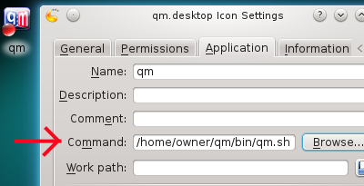
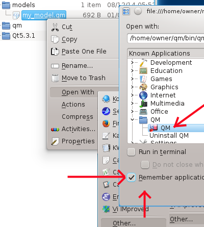
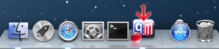

Model-Based Design Tool


The QM™ modeling tool can be used in two modes of operation: interactive GUI mode and command-line mode. This section begins with the description of the command-line parameters and the console-mode, which is the same on all platforms supported by QM. Next, the section describes how to launch QM™ in the interactive GUI mode, which might vary, depending on the underlying operating system.
The QM™ executable takes the following optional command-line parameters:
-h prints help to the console and exits-c [item] generates code for the given model [item] and exits-d [item][.png|.emf] generates diagram from the given model [item] and exits-stylesheet <stylesheet-file> override a stylesheet used by QM-style <style> override the style used by QM-stylesheet <stylesheet-file> option overrides the default QM style sheet qm.qss located in the QM™ Installation Folder. The -style <style> option overrides the default QM style.The QM™ application supports the console mode, in which it can generate diagrams and/or generate code. This console QM mode allows you to incorporate the code generation step into an automated build process, such as Makefiles, build scripts, or extra pre-compile steps in project files. The following output from the -h (help) option concisely summarizes the features of the console-mode:
C:\>qm -h
qm 4.6.0 (c) Quantum Leaps. https://www.state-machine.com/qm
Usage: qm [model-file] [-h][-c [item]] [-d [item][.png|.svg]]
or: qm [-h][-c [item]] [-d [item][.png|.svg]] [--] <model-file>
Notes:
The argument [model-file] must be provided for options -c and -d
The options -d|-c [item] might be repeated multiple times
[item] is the fully-qualified model item name, e.g., ${foo::bar}
Examples:
qm xyz\my_model.qm -c (generate code for entire model "xyz\my_model.qm")
qm D:\xyz\my_model.qm -c (generate code for entire model "D:\xyz\my_model.qm")
qm -c ${pkgA} my_model.qm (generate code for item ${pkgA})
qm -c -- my_model.qm (generate code for entire model "my_model.qm")
qm my_model.qm -c ${pkgA} (generate code for item ${pkgA})
qm my_model.qm -c ${pkgA} -c${pkgB::.} (generate code for item ${pkgA} and ${pkgB::.})
qm my_model.qm -c ${.::main.c} (generate code for item ${.::main.c})
qm my_model.qm -d (generate all PNG diagrams in the model "my_model.qm")
qm my_model.qm -d *.png(generate all PNG diagrams in the model "my_model.qm")
qm my_model.qm -d *.svg (generate all SVG diagrams in the model "my_model.qm")
qm my_model.qm -d ${pkgA}.png (generate all PNG diagrams in the item ${pkgA})
The simplest way of running QM™ is by double-clicking on the desktop shortcut. In this case QM is launched without any command-line arguments. QM™ can be also launched by dragging a QM model file and dropping it on the QM shortcut, in which case QM is launched with the model file name as a command-line argument. Finally, QM can also be launched by double-clicking on the Model File in the standard file explorer on your system, which launches QM™ and opens the model.
To run the QM™ application on Linux, you need to run the <qm>/bin/qm.sh bash script instead of the <qm>/bin/qm executable directly. This is because the dynamic linker on Linux does not check the application directory for dynamic libraries by default, and it has to be expressly configured by setting the LD_LIBRARY_PATH environment variable, which is why you need the <qm>/bin/qm.sh script. Make sure that the script has executable permissions.
The most convenient way to launch QM™ on Linux is through a desktop shortcut (see also Manual Setup of QM Desktop Shortcut ). The shortcut must be set to run the <qm>/bin/qm.sh script, as shown in the screen shot below.

If you associate QM model files (.qm) with the QM application, you can conveniently launch QM by double-clicking on a chosen model file in the file explorer, and choose the "Open With..." option from the popup menu. The screen shot below shows how to achieve it in Linux:

On Mac OS X, you can put the QM into the Dock, as shown in the screen shot below. You can also create a QM application alias on the desktop.

Next: QM™ Tutorial